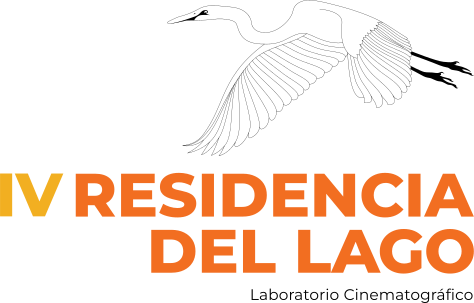
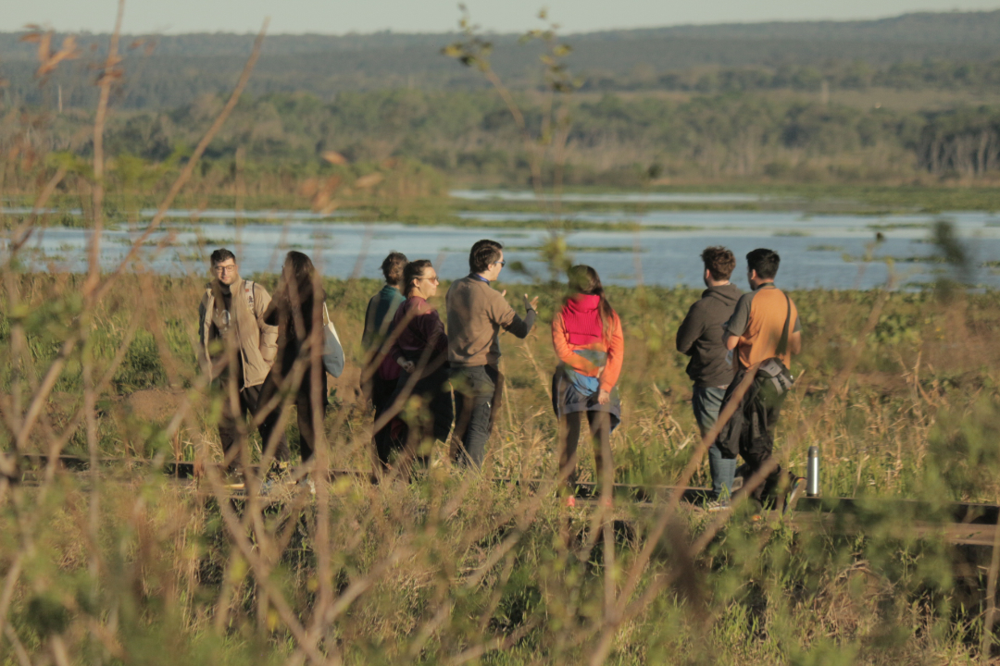
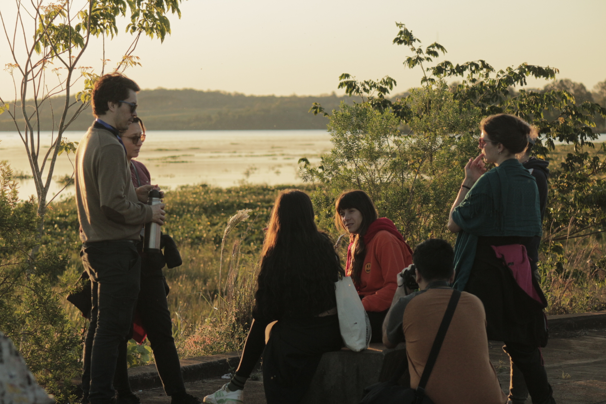
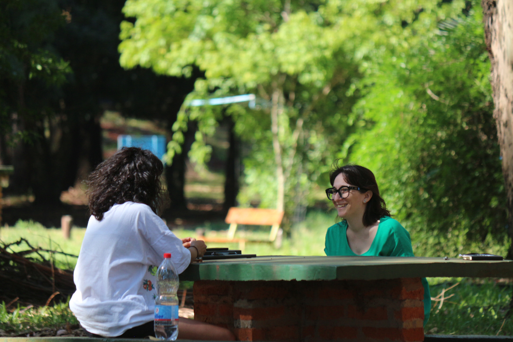

IV RESIDENCIA DEL LAGO
RDL LAB es un laboratorio cinematográfico que acompaña el desarrollo creativo de proyectos audiovisuales en etapa de tratamiento argumental para duplas creativas de Iberoamérica. En esta edición, cuenta con el apoyo del Programa Ibermedia.
La cuarta edición de RDL LAB se desarrollará de forma virtual del 12 al 30 de octubre y de manera presencial del 10 al 15 de noviembre en Misiones (Argentina).
La convocatoria estará abierta del 24 de abril al 15 de junio (23:59 Argentina).